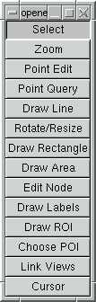
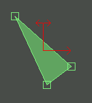

Most of the editing modes have particular button combinations to do actions, but in all editing modes the standard View Area Button/Key Sequences remain valid. Note that while not explicitly disabled in 3D mode the various editing interactions will generally not work properly in 3D mode.
Also, note that essentially all editing operations can be undone by hitting Control-Z or selecting Edit->Undo in the menu.

The Delete or Backspace key may be used to delete the currently selected feature(s).
Each LeftButton-Clock in the view will result in a new point feature being created, and after creation it will be the selected feature. The Delete key can be used to delete the currently selected point if there is one. It is not possible to move, or otherwise manipulate points in this mode. Switch to Select mode to do that.
On entering Point Query mode, a new point query layer will be created if one is not already available on the current view. Otherwise the point query layer will be made the active layer if it is not already active.
Point query layers can show location and raster pixel value information for the selected points. The Point Query Properties panel has options for controlling what is shown for each query point.
The LeftButton-Click action is used to initiate digitizing of a new polyline. Subsequent left clicks will add new nodes to the polyline. The RightButton-Click or Escape key can be used to terminate line mode. While digitizing a line, the Delete key can be used to delete the last node added.
Note that while digitizing a line undo support is temporarily disabled.
The LeftButton-Click action can be used to select a shape to operate on. Once selected the shape will be drawn with the normal selection styling but a resize/rotate control will also be drawn in red, centered on the shape to be modified. It will look something like this:

The LeftButton-Drag action on the red two-directional arrowhead will rotate the shape in question. A LeftButton-Drag action on the red one directional arrow head will allow scaling the shape larger or smaller. A RightButton-Drag action on either arrowhead will result in a rotation and scaling effect.
Rotation and scaling are around a center point for the shape (the crossing point of the two arrows). Rotation and scaling applied to a point symbol result in the angle and scaling parameters being modified. Rotation and scaling applied to a line or area shape result in the actual vertex locations being modified.
Note that selecting the boxes around vertex of lines or areas has no effect in rotation and scaling mode. The Escape key may be used to terminate a rotation or scaling drag.
In rectangle mode LeftButton-Drag can be used to draw a new rectangle feature. If you click on the corner of an existing rectangle, that corner can be dragged, resizing the existing rectangle. If you click on the edge of an existing rectangle, that edge can be dragged resizing the existing rectangle.
The Escape key can be used to abort creation of a new rectangle, but while dragging an edge or corner of an existing rectangle it will just stop the dragged, equivelent to releasing the button.
Digitizing a new polygon is accomplished by LeftButton-Clicking at each vertex location. When complete a RightButton-Clock terminates the process, and the polygon is closed.
Adding an internal ring (a hole) to an existing polygon is done by digitizing a new polygon entirely within the old polygon. The nesting is recognised, and the new polygon is treated as an internal ring to the main polygon. Note that this implies it is impossible to digitize a separate polygon that is inside another polygon ... to accomplish this, digitize it elsewhere, and then drag it into the area. If you digitize an a new polygon that starts inside another polygon, but goes outside the parent, it will be discarded on termination as a corrupt hole.
In order to manipulate the nodes of a feature it is necessary to feature select the feature. Node editing mode only supports selection of a single feature at a time, by LeftButton-Clicking on it. Area selects are not supported. Selecting a feature will highlight all it's nodes at which point one of them can be selected, by left clicking on it.
A new node may be introduced into the selected feature by LeftButton-Pressing on an edge, but not too close to a node. The new node may then be positioned by dragging it before releasing.
An existing node is selected by clicking on it (or very close to it), at which point the node will be highlighted and filled in. The node may then be dragged to a new location. A node may be deleted by hitting the Delete key.
The ROI tool does not operate on a feature layer. It draws a free standing rectangle by LeftButton-Draging it out. Edges, and corners can also be grabbed and dragged.
View characteristics includes the view position, zoom level, and rotation in 2D. In 3D this includes the view position, view direction, and vertical exaggeration. View characters does not include details about layers displayed, layer colors or anything of that sort.
Link windows will only operate correctly if all views are in the same coordinate system. For instance, if one view is georeferenced in UTM, and another is in lat/long degrees, the linked views will not operate in a useful manner.